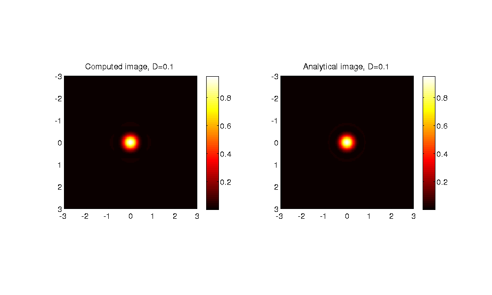
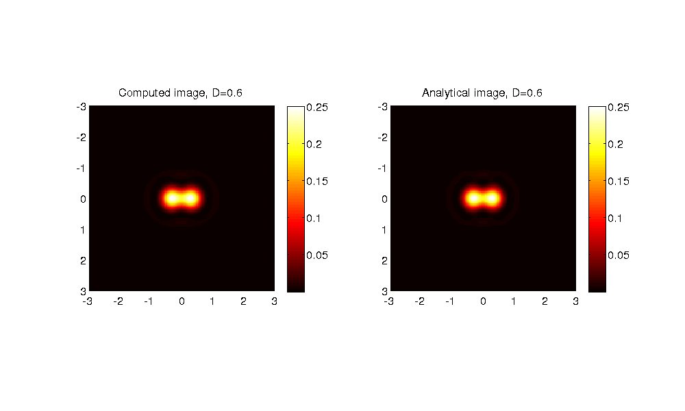
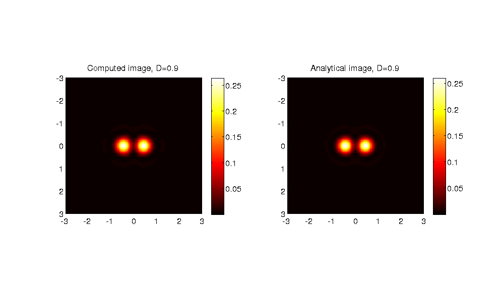

Evaluate accuracy of the Microlith package.
Comparison of simulated and analytical images of two points seperated by various distances under a bright-field microscope with matched illumination.
Written by Shalin Mehta, www.mshalin.com License: GPL v3 or later.
Contents
Define the simulation grid and parameters of imaging system.
L=5; % Support over which we want to calculate the image. xs=0.05; % Sampling rate in the specimen plane. % To avoid aliasing, specimen should be sampled at 0.2 lambda/NA % atleast. % Sampling rate in the specimen plane determines extent in frequency % domain. xs=0.1 should suffice as the transfer function fits into the square with % side 2 or (1+S)/sqrt(2) and sampling at 0.1 defines support of [-5 5]. v=-L:xs:L; % Transeverse extent of simulation. u=0; % Analytical expression for two point image is available only in focus. params.NAo=1; params.NAc=1; params.lambda=1; params.nImm=1; params.nEmbb=1; sep=0.1:0.1:1.2; twopointsimulated=zeros(length(v),length(v),length(sep));
Set up the microscope.
brightfield=microlith(v,u);
computesys(brightfield,'Brightfield',params);
Compute images at different seperations.
[xx, yy]=meshgrid(v); parfor idx=1:length(sep) specimen=(abs(abs(xx)-0.5*sep(idx))<10*eps ... & abs(yy)<10*eps ); computeimage(brightfield,specimen,'CPU'); twopointsimulated(:,:,idx)=brightfield.img; end
Analytical image of two points separated by D lambda/NA.
The expression can be found in Born & Wolf inside the section on 'two-point resolution.'
S=params.NAc/params.NAo; twopointanalytical=zeros(size(twopointsimulated)); parfor idx=1:length(sep) point1=abs(xx-0.5*sep(idx))<10*eps & abs(yy)<10*eps; point2=abs(xx+0.5*sep(idx))<10*eps & abs(yy)<10*eps; dist1=bwdist(point1)*xs; %Distance in lambda/NA from point-1. dist2=bwdist(point2)*xs; %Distance in lambda/NA from point-2. twopointanalytical(:,:,idx)=jinc(dist1).^2+jinc(dist2).^2+2*jinc(S*sep(idx))*(jinc(dist1).*jinc(dist2)); end % Apply the radiometric factor so that analytical and simulated images can % be compared. RadiometricFactor=params.NAo^2*params.NAc^2*(xs/0.1)^2; twopointanalytical=RadiometricFactor*twopointanalytical;
Compare the analytical and computed two point images.
figure(1); clf; set(1,'defaultaxesfontsize',14,'Position',[50 50 1000 600],'Color','white'); colormap hot; for idx=1:length(sep) subplot(121); imagesc(v,v,twopointsimulated(:,:,idx)); axis equal; colorbar; xlim([-3 3]); ylim([-3 3]); title(['Computed image, D=' num2str(sep(idx))]); subplot(122); imagesc(v,v,twopointanalytical(:,:,idx)); axis equal; colorbar; xlim([-3 3]); ylim([-3 3]); title(['Analytical image, D=' num2str(sep(idx))]); snapnow; pause(0.5); end  